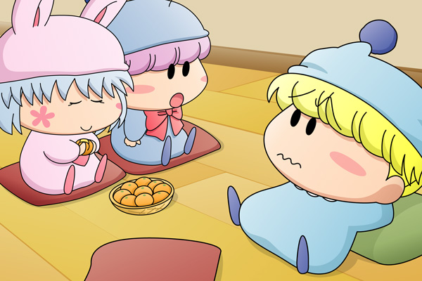

翌朝、甘い匂いのするクモモ特性の菓子パンが朝ご飯として振る舞われました。
みんなはお腹いっぱいに菓子パンを食べ終わると、隣のリビングで思い思いにのんびり過ごしていました。
たった一人、ヤシチを除いては。
ミルモ「今日はヤシチにも邪魔されずにのんびりクモモの菓子パンが食べられたぜぃ」
ミルモはごろごろしながらつぶやきました。
その声は少し離れたヤマネにも届いていて・・・。
ヤマネ「ヤシチ兄様・・・」
サスケ「ヤマネ・・・」
ハンゾー「早く元気を出すのら～」
サスケ「そうだぜ、ヤマネが悲しいとオイラも悲しくなってしまうんだぜ」
ヤマネ「サスケ先輩、ハンゾー先輩、ありがとうございます！」
ヤマネが微笑むと、サスケとハンゾーにも笑顔が戻りました。

リルム「もう、ミルモ様ったら！
ヤマネさんの気持ちも少しは考えてあげてくださいませ！」
リルムがミルモにそう注意しましたが、ミルモは全く耳を貸そうとしません。
今度はパピィと並んで座っていたムルモがミルモに言い放ちました。
ムルモ「そうでしゅよ。
ま～ったくお兄たまはデリカシーのカケラもないでしゅね」
ミルモ「！ 何だとぉ」
パピィ「そうね、本当にそれでも恋の妖精なのかちら？
むしろ王子らちくもないわね」
ミルモ「う・・・ムルモはともかく今日はパピィもきついこと
言うじゃねーか」
パピィ「将来あたちのお兄たんになるのだからしっかりしてほちいわ」
みかんの皮をむきながらパピィがつぶやきました。
ムルモ「何でお兄たまがパピィのお兄たまになるのでしゅか？」
パピィ「ごちゃごちゃうるちゃいわね。
それよりも事件の調査はどうちたのよ？
降参するんだったらあたちが協力ちてあげてもいいわよ」
ムルモ「調査はこれからでしゅ。
この事件はボク一人で解決してみせましゅから
パピィは邪魔しないで欲しいでしゅね」
パピィ「ムカッ！
何よ！人がせっかく手伝ってあげると言ってるのに！」
ムルモ「んぐぐ・・・」
と、手に持っていたみかんをムルモの口の中に押し込みました。
少し久しぶりとなりましたが、ストーリーもいよいよ二日目に突入です。探偵ムルモもいよいよ本格的な調査・・・と思いきや、クモモによる朝ご飯の菓子パンで満腹になってのんびりしていたりします。そしていつも通りのムルモとパピィのケンカ、これこそが平和の象徴と言えますね。
次回は今回登場しなかった妖精たちにスポットを当ててみたいと思います。
(2008/2/2)